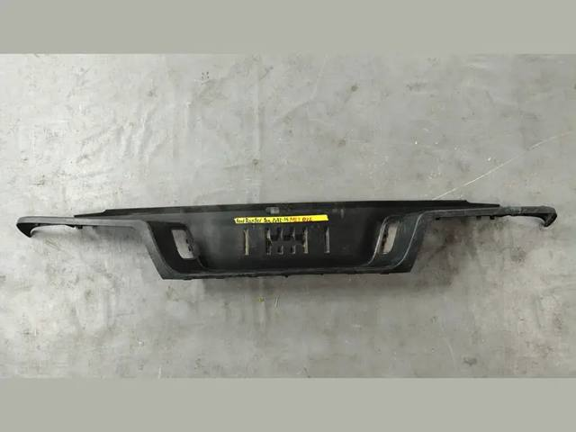
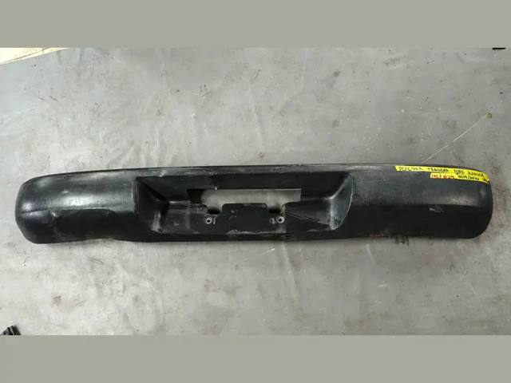
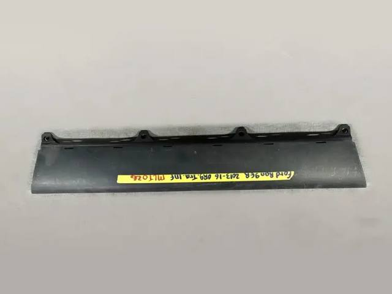

Piezas de carrocería para Ford Ranger
9 piezas disponibles hoy para Ford Ranger, cada una con su foto y su código: molduras traseras (4), parrillas (2), faros y lámparas delanteras (1), defensas delanteras (1). Dinos el año de tu carro y te confirmamos si le sirve.
- Garantía de 3 días
- Foto real de cada pieza
- Efectivo, Yappy o ACH
- Lunes a sábado, 8:00 a. m. a 5:00 p. m.
Molduras traseras para Ford Ranger 4
 MLT006Ranger2020 · original
MLT006Ranger2020 · original
MLT022Ranger2012-15 · genérico
MLT025Ranger XL2019-22 · original
MLT026Ranger2013-16 · original P001Ranger
P001Ranger P053Ranger
P053Ranger 172Ranger
172Ranger 943Ranger
943Ranger DT225Ranger XLT
DT225Ranger XLT